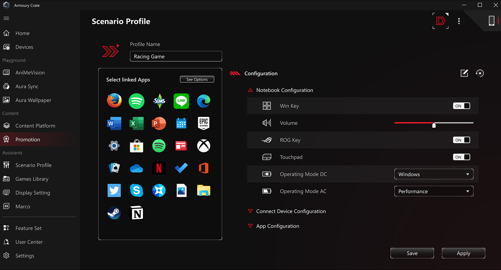

Armoury Crate 避坑指南：这几个地方我踩过了，你别再踩
用 Armoury Crate 调灯效、控风扇、超频看起来很简单，但几个暗坑能让你调半小时白忙活，甚至把系统拖慢。这篇把我踩过的坑逐个拆开说清楚。
Armoury Crate 是 ROG 和华硕游戏本用户绕不开的工具——它的官网上把灯效同步、风扇曲线、屏幕模式切换、资源监控全都集中在一个窗口里管着。但它的设置界面看着规整，背后的坑真不少。我第一次装机时折腾了整整两天，才发现有几处地方如果没人提醒，纯靠自己摸根本摸不透。
坑一：Aura Wallpaper 悄悄吃掉了你的开机速度
症状：开启 Aura Wallpaper 之后，开机进入桌面的时间明显变慢了——机械硬盘的老机器能多等十好几秒，NVMe 也得慢个两三秒。更气人的是，你在系统壁纸设置里换了一张图，重启之后又变回了那张带 RGB 光效的 Aura 壁纸。
原因：Aura Wallpaper 本质上是在你的显卡驱动层注入了一个虚拟的"显示设备"，把壁纸变成了 Aura Sync 灯效网络里的一环。它需要开机后抢在桌面环境加载之前启动，跟主板灯效、显卡灯效做同步握手。这层钩子对资源的额外开销说大不大，但老机器本来开机链路就长，加这一步就触发了瓶颈。
解法：如果你不是那种盯着桌面壁纸的 RGB 效果就能发呆半小时的玩家，直接关掉就好。路径在「设置 → 主题」面板里把 Aura Wallpaper 的开关拉到 off。关掉之后系统壁纸设置立刻恢复正常，开机速度也会回来。真喜欢 RGB 的话，主板灯效和键盘灯效留在 Aura Sync 里就够了。
坑二：风扇曲线改了半天，温度曲线纹丝不动
症状：在风扇曲线编辑器里把 70℃ 那档的风扇转速从 2000 RPM 拉到了 4000 RPM，保存重启之后跑压力测试，GPU 温度到 70℃ 那一刻风扇还是慢悠悠的 2000 转。改了跟没改一样。
原因：很多人不知道 Armoury Crate 有一个「场景配置文件」的概念。你在风扇曲线编辑器里的修改，默认只对「自定义」场景生效，但如果当前激活的场景是「性能」或者「静音」，这些场景各自有一套独立的风扇曲线，会覆盖你在「自定义」里改的东西。我当时就是卡在这——改了半天自定义曲线，结果机器一直跑在「性能」场景下，那边的曲线根本没碰过。
解法：先看一眼 Armoury Crate 首页右上角的场景配置文件标签，确认当前激活的是哪个。然后进到「设置 → 场景配置文件」，找到那个激活的场景，点进去改它对应的风扇曲线。或者简单粗暴点，直接激活「自定义」场景，这样全局都用你手调的那套曲线。

坑三：资源监视器记录了一堆数据，到用的时候找不到
症状：上次 GPU 温度爆了黑屏，赶紧点开资源监视器点「记录」，跑了一遍压力测试。结果第二天想导出 CSV 给售后看，找不到文件在哪。点软件里的「导入」按钮，目录里一片乱，根本分不清哪个是昨天那次。
原因：Armoury Crate 默认把记录文件扔在 %USERPROFILE%\AppData\Local\ASUS\Armoury Crate\ResourceLog\ 下面，文件按时间戳命名（比如 20261016_143201.armouryrc），而且它不会自动清理旧记录。跑个压力测试生成的记录大概几十 MB，几个月攒下来就是好几百 MB，而且时间戳格式对人不友好，肉眼根本看不出来哪条对应哪次故障。
解法：每次录完就立刻导入回放、导出 CSV，把文件复制到你自己的故障排查目录里，然后回去把 ResourceLog 目录清空。或者干脆养成习惯——录完导出完就删，别让垃圾堆着。
坑四：通知灯效开了，但 Slash Lighting 完全不闪
症状：背盖灯条明明支持通知灯效，微信消息来了、邮件到了，背盖 Slash Lighting 纹丝不动。灯条本身的主题切换正常，就是通知提示没反应。
原因：Slash Lighting 是独立于 Aura Sync 的灯效区域，它的通知功能需要单独授权。Windows 设置里有一个「允许应用访问通知」的权限开关，Armoury Crate 如果没拿到这个权限，就读不到系统通知事件，自然不会触发灯效。我第一次遇到时以为要重装软件，结果就是 Windows 的一个权限设置没开。
解法：打开「Windows 设置 → 系统 → 通知」，往下滚找到「允许 Armoury Crate 访问通知」的开关，拉到 on。然后回到 Armoury Crate 里重新选一下通知应用，发一条测试消息，应该就闪起来了。其他灯效相关的排查思路可以去armoury crate文档翻一下，覆盖面很全。
坑五：待机唤醒后设备灯效乱成一锅粥
症状：笔记本合盖待机一晚上，第二天掀开屏幕，键盘灯、主板灯、Slash Lighting 背盖灯条全亮着，各自跑着各自的默认效果，跟你待机前设好的不一样。关掉再打开 Armoury Crate，它自己会重新同步，但总不能每次唤醒都手动点开一次吧。
原因：这是 Armoury Crate 比较老的一个 bug——合盖待机属于 S3/S0ix 混合休眠，设备在这个过程中会断联再重连，Aura Sync 的同步状态有可能丢失，导致每个设备回退到固件里写死的默认灯效。新版 Armoury Crate 已经修复了大部分机型，但老款 ROG 笔记本还是会偶尔碰到。
解法：第一，确认你用的是最新版 Armoury Crate——设置里有「检查更新」，别省这一步。更新通道有时会延迟推送，等不及的直接去官方下载拿安装包覆盖装一遍也行。第二，如果还是会乱，在「设备 → 主板」里找到「关机后灯效持续」这个选项，如果开着就关掉。持续亮灯的功能本意是关机后保持氛围感，但它在待机唤醒的过渡阶段会干扰同步，关掉之后情况会好很多。
防坑清单
最后列几条速查，下次碰到问题先过一遍：
- Aura Wallpaper 能关就关：除非你真的盯着桌面 RGB 能开心，否则它就是纯额外开销。
- 改风扇曲线先看场景：确认当前激活的场景是你正在改的那一个，别改了半天改了个寂寞。
- 资源记录录完立刻导出：默认目录自动清理是不存在的，攒多了找起来自己头疼。
- 通知灯效不闪先查权限：Windows 通知权限没开 = Armoury Crate 看不到通知事件。
- 待机灯效乱先更版本：新版修了不少唤醒同步的 bug，顺手更一下就好。
说起来，Armoury Crate 作为一个要把十几种不同硬件的控制界面塞进一个窗口里的软件，能做到现在这个程度已经不容易了。坑都是在各种边角场景里藏着的，知道它们在那里，日常用起来其实相当省心。